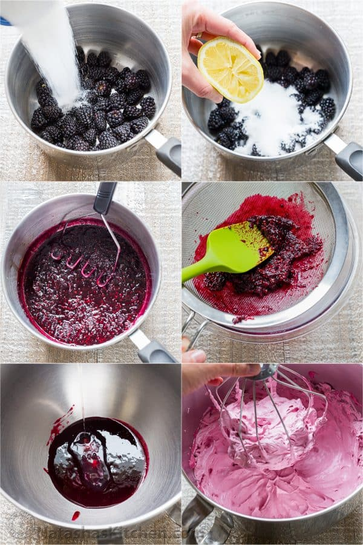
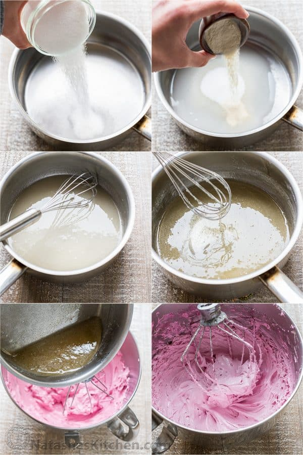
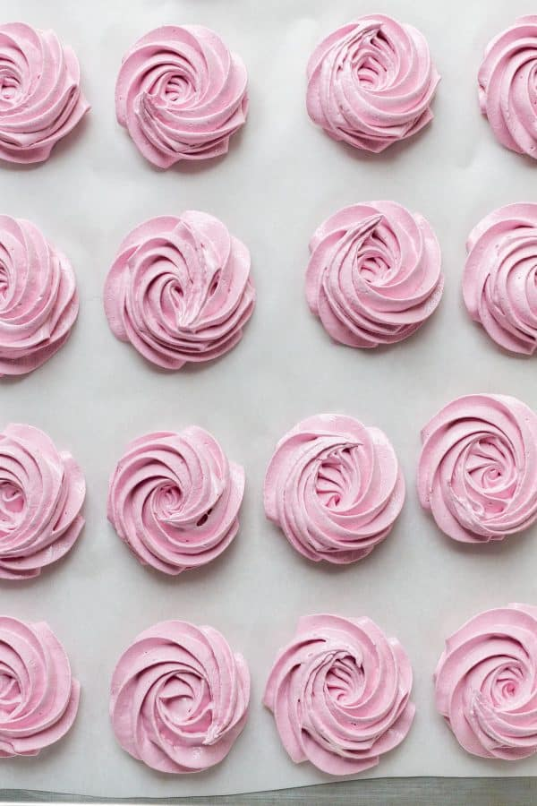
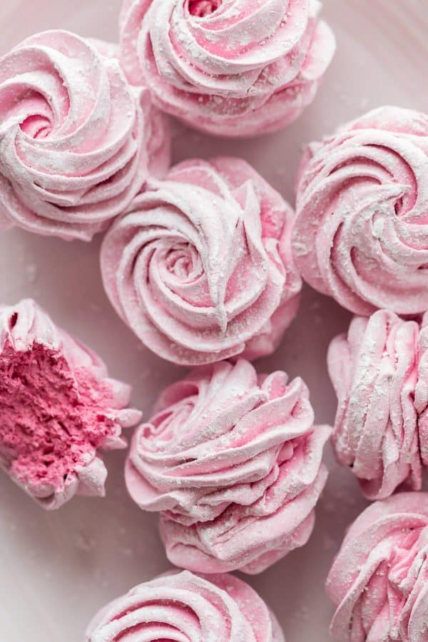

Homemade Marshmallows Recipe
Made by
Aziz Karnit
June 1, 2017
 Zephyr is a type of Russian homemade marshmallows recipe. These tasty confections are fluffy and literally just melt in your mouth. Learn how to make these homemade marshmallows with the easy video tutorial.
Zephyr is a type of Russian homemade marshmallows recipe. These tasty confections are fluffy and literally just melt in your mouth. Learn how to make these homemade marshmallows with the easy video tutorial.
I have been working on perfecting this recipe for some time and these have the right fluffy consistency using real ingredients (no jell-o needed), and they have intense blackberry-lemon flavor. P.S. that beautiful pinky-purple hue is all natural from fresh blackberries and makes these completely irresistible!
Ingredients for Blackberry Puree:
- 2 cups (or 8 oz or 250 grams) blackberries.
- 1/2 cup (100 grams) granulated sugar.
- 1 Tbsp fresh lemon juice.
- 1 egg white, room temperature
For the Agar Agar Syrup:
- 1/3 cup (75 ml) water
- 1 cup (200 grams) sugar
- 2 tsp (5 grams) agar agar*
- Powdered Sugar to dust
How to Make Homemade Marshmallows (Zephyr):
- In a medium saucepan, bring blackberries, 1/2 cup sugar and 1 Tbsp lemon juice to a simmer. Mash berries and simmer uncovered 10 min then strain through fine sieve, pressing on solids with a spatula. Scrape the back of the sieve to get 1/2 cup or 125 grams of puree. Chill the puree over an ice bath until cooled.
- Once puree is chilled and slightly thickened, combine it with 1 egg white in the bowl of a stand mixer fitted with whisk.** Beat 8-10 min on high speed or until thick and stiff peaks form. While the blackberry/egg white mixture is whipping, proceed with step 3. 
- In a medium sauce pan, combine 1/3 cup water, 2 tsp agar agar and 1 cup sugar. Place over medium heat, bring to boil then reduce heat to a low boil and cook 5 min, whisking constantly until syrup has thickened and pours from a spoon without dribbling. Remove from heat.
- With mixer on the LOWEST speed, and as soon as agar syrup is off the stove, immediately pour it in a thin stream into the whipped blackberry mixture. Avoid getting syrup on whisk and bowl. Scrape down the bowl and beat another 2-3 minutes on high speed until stiff peaks form. 
- Right away, transfer to a piping bag fitted with a Wilton 1M large open star tip and pipe roses onto parchment-lined baking sheet, keeping them even in width/size. 
- Let stand in a draft free, low humidity, room temperature (70˚F) area, uncovered 6-12 hours, or overnight. Marshmallows will form a glossy film on top and will come off the parchment fairly easily, then match 2 halves together and roll sandwiched marshmallows in powdered sugar. 